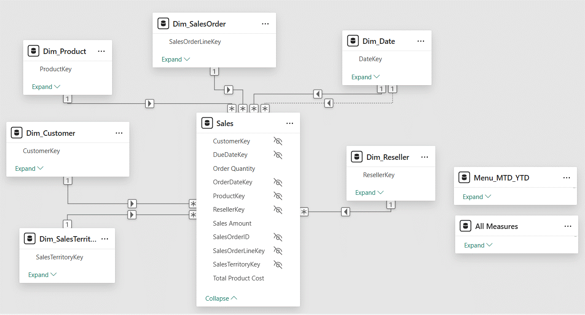

Sales Report For Executives
Sales Report for the executives of a online shop cum supplier of sports goods. Uses AdventureWorks dataset from Microsoft©.
Business need was to create a decision making support system by answering the following questions:
- Which days have the most sales in a month?
- Which country/region is the company seeing most success?
- Which product category and reseller business types are seeing most growth?
- Which months have sales as per order date lower than sales that are due in a month?
Data modelling is based on star schema. Intutive filtering for report users and is optimal in terms of performance and extensibility.

Report designing was based upon maximizing effectiveness and insights discovery speed of the reports and their visuals.
{kind=link}
{kind=link}
{kind=link}
Those who fail to learn from the past is bound to repeat it!
Future is a mystery the best we can do is to take informed guesses!
Data story telling enabled by this report empowers the executives to take data driven decision to allocate the optimal level of promotions and sales force focus among the various locations and resellers.